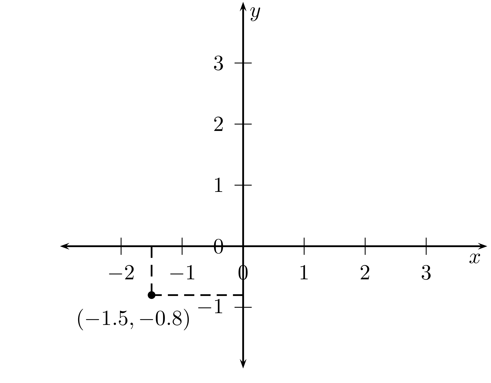
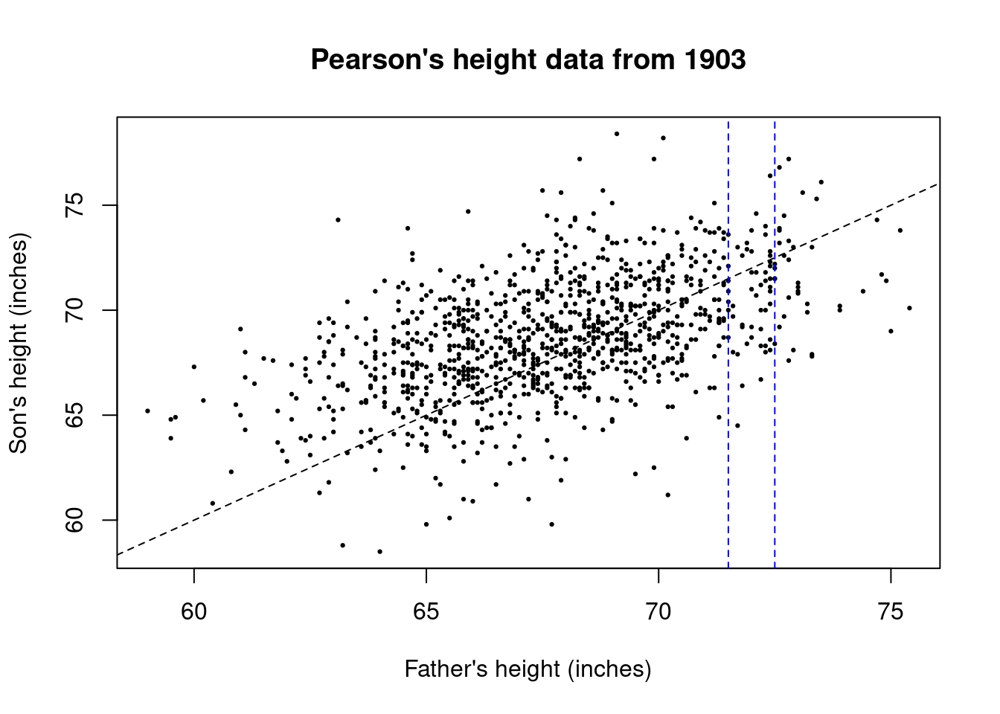

points <- data.frame(x = c(1,2,3,4), y= c(1,2,3,4))6 Modelling relationships: Points, Lines and Scatterplots
Overview
In this section you will make your first steps into statistical modeling. With a statistical model you can study relationships between two or more variables and analyze more complex empirical situations that we did up to now. When we going towards models we need some tools from mathematics. Here we introduce first the mathematics of points and lines and how you can use R to visualize and manipulate points and lines. This will prepare the next section where we will discuss how we can use a model to make predictions.
A statistical model is a mathematical representation of the relationship between variables which we can use for the prediction of the value of one variable using the value of another variable or the values of a list of other variables.
Points and lines can be plotted in a coordinate system. Points and lines can at the same time be described and manipulated algebraically by equations. You will learn to understand both representations and how to go back and forth between them.
An important object in this context are straight lines. You need to understand what the slope and the intercept of a line are and how you can describe a line by an equation as well as how you can recognize the slope and the intercept from the equation.
You will learn how to harness the power of the computer by plotting lines and points using R.
In the end of this section we start our discussion of modelling relationships between variables and using these models to make predictions.
6.1 Statistical models
In our course so far we have encountered various methods which allow us to visualize and summarize data consisting of a single set of numbers. These simple techniques have already taken us quite far and allowed us to look at various interesting real world questions. We have also learned in some instances describing data where more than one variable is involved in studying some scatterplots.
In general modern data are much more complex. In such more complex situations, involving whole lists of related variables, we need more powerful tools. In this chapter we are going to take a first step in introducing the idea of a statistical model.
A statistical model is a mathematical representation of the relationship between variables which we can use for the prediction of the value of one variable using the value of another variable or the values of a list of other variables. It also allows us a more precise description of the relationship between variables.
Statistical models inevitably involve some mathematical ideas, which you need to understand to confidently work with these models and use them. In this chapter we will introduce you to these ideas step by step, going into actual statistical models and its most important form, regression analysis in the next chapter.
6.2 Plotting points and lines
In this section we review some ideas about plotting points and lines which we will need for understanding statistical models. For some of you this might be a refresher of concepts you have already encountered in school, for others this material might be new.
6.2.1 Reading points off a graph
Figure 6.1 shows two coordinate systems, coordinate-system 1 and coordinate-system 2. The graphs of the coordinate systems have a horizontal axis, the \(x\)-axis and a vertical axis, the \(y\)-axis. Each point in the plane can be described by its coordinates, given by an \(x\) value and a \(y\) value.
For example, the point shown in coordinate-system 1 is the point \((x,y) = (2,3)\). This is the point you get in the plane, if you move from the origin - \((0,0)\) - 2 units to the right on the \(x\)-axis and then 3 units up on the \(y\)-axis.
In the second coordinate system, coordinate-system 2, you see the plot of a point \((x,y) = (-1.5, -0.8)\) with the coordinates \((-1.5,-0.8)\).
The idea to represent points in a plane by pairs of numbers (their coordinates) is very powerful because it combines two apparently different field, algebra - the manipulation of numbers by adding, subtracting etc. - and geometry, lines, points and other geometric objects.
This idea goes back to the french philosopher and mathematician Rene Descartes (1556 - 1630).1 This is why the \(x\) and \(y\) coordinates are often referred as “Cartesian coordinates”.
1 Rene Descartes was born in 1556 and died in 1630. He was a french philosopher and mathematician and scientist. His connection of the two previously separated fields of geometry and algebra into the field of analytic geometry is one of his lasting contribution to mathematics. Here you see a portrait painted by the Dutch painter Frans Hals. 


6.2.2 Plotting Points
Assume we want to plot a point \((x,y) = (2,3)\).


Here is a step by step procedure outlined in Figure 6.2. We start with a coordinate system as depicted in Figure 6.2 (a). The \(x\) coordinate is at 2. We could imagine a dotted line starting at \(x=2\) and extending vertically through the coordinate system as shown in Figure 6.2 (b). Finally the \(y\) coordinate has value 3. We could imagine a dashed line starting at the \(y = 3\) coordinate parallel to the \(x\) axes as shown in Figure 6.2 (c) The point \((2,3)\) is where both of the dashed lines intersect.
With the help of the computer, you can of course plot points automatically. Let me show you how.
Say we want to plot the points \((1,1)\), \((2,2)\), \((3,3)\) and \((4,4)\) with R. The way we plot these data would be that we represent the coordinates in R as a dataframe (see 3.2.4) like this.
The first column in the dataframe which we named points contains all the values of the x-coordinates, the second column contains all the values of the y-coordinates.
Now if we give the object pointsas an argument to the plot function of R we get a plot of the points in the appropriate coordinate system. Let’s try this:
plot(points, pch = 19)As an aside the argument pch = 19 given to the plot function tells R to show the dots filled instead as unfilled circles. This is a bit opaque and difficult to remember. The default values also vary depending on which object is plotted. You do not have to remember such details. They are usually recovered as needed from the help function.2
2 Here is the full list of possible values for the pch argument and what they do. The default value in plot is pch = 1. 
6.2.3 Slope and Intercept
The following figure shows a line.
Take any point on this line, say point A. Now move up the line to any other point, say B. When you make such a move, your \(x\)-coordinate has increased by some amount. We call this increase \(\Delta x\).3 In our picture \(\Delta x = 2\) because we moved two units to the right. At the same time you \(y\)-coordinate has increased by some other amount which we call \(\Delta y\). In our picture \(\Delta y = 1\). The ratio \(\Delta y/ \Delta x\) is called the slope of the line. Whatever points you take on this line the slope will always be 1/2.
3 \(\Delta\) is a greek letter and in mathematical notation it is often used to symbolize change
Important
slope = \(\frac{\Delta y}{\Delta x}\)
The slope is the rate at which \(y\) increases with \(x\) along the line.
The intercept of a line is the value of the \(y\)-coordinate at \(x = 0\). You could also say that the intercept is the point where the line crosses the \(y\)-axis.4.
4 We have to be careful with this rule of thumb because this intersection property is true only if the \(x\)-axis and the \(y\)-axis cross at the origin \((0,0)\)
For example in Figure 6.3 the intercept is 1, in Figure 6.9 (a) is 2 and in Figure 6.9 (b) the intercept is 3.
6.2.4 How to plot a line
Assume you have to plot a line which passes through the point \((2,1)\) and has a slope of \(\frac{1}{2}\). How would we plot this line?
The first step is that we draw the point \((2,1)\) into the coordinate system, like this:
Next you move any convenient distance \(\Delta x\) to the right like this, say we move 3 units. Make a point at this location like this
Since the line slopes up - the slope is positive an 1/2 - the line passes above this point. The question is, how far?. To find the answer to the question ho much will the line rise in a \(\Delta x\) of 3? The answer can be found from the formula of the slope. The line rises at the rate of half a vertical unit per horizontal unit. Thus we have \[\begin{equation} \Delta y = \Delta x \times \text{slope} \end{equation}\] In our case this means \(3 \times \frac{1}{2} = 1.5\) Thus from the contruction point \((5,1)\) we have to go up 1.5 units and mark a new point there. Now if you join these two points using a ruler you get the line like this

6.2.5 The algebraic equation for a line
Here is a rule for computing the coordinate \(y\) of a point from its \(x\) coordinate \[\begin{equation} y = \frac{1}{2}x + 1 \end{equation}\]
Let us make a table from this equation
| x | y |
|---|---|
| 1 | 1.5 |
| 2 | 2.0 |
| 3 | 2.5 |
| 4 | 3.0 |
If you plot these points, they all fall on a line. Any point whose \(y\)-coordinate is related to its \(x\)-coordinate by the same equation \(y = \frac{1}{2}x + 1\) will be on this line. This line is called the graph of the equation. The slope is 1/2, the coefficient of \(x\) in the equation. The intercept is 1, the constant term in the equation. We can draw a picture illustrating the situation
Using a general formulation we can say
Important
The graph of equation \(y = kx + d\) is a straight line with slope \(k\) and intercept \(d\)
6.2.6 Plotting lines, using R
The examples we discussed so far helped you understand how to draw equations like \[\begin{equation} y = k x + d \end{equation}\]
by hand and to switch between the algebraic and geometric description of such equations. Of course you can use R to do such plots.
We briefly discuss how. Let us generate some example data for the case of the first equation in exercise 1:
\[\begin{equation} y = 2x + 1 \end{equation}\]
We can draw such lines in R using the R function curve(). This function requires as arguments the equation of the line and the range from where to where the \(x\) variable should go. Let us start at \(x=0\) and let x go to \(x=5\):
curve(1 + 2*x, from = 0, to = 5)Here is another example, which is slightly more interesting because of its context. Consider the linear equation
\[\begin{equation} y = 1007 - 0.393 x \end{equation}\]
According to Andrew Gelman (2021) this line approximates the trajectory of the world record time in seconds for the mile run based on data starting from the year 1900.
To draw a curve like this by R, and assuming we plot the curve for the arguments \(x = 1\), \(x = 2\), \(x = 3\) , \(x = 4\) and \(x = 5\), you would best choose the R function curve() and a code like this:
curve(1007 - 0.393*x, from = 0, to = 5)
Now you try
Test your understanding of interpreting this line in the given context.
- What is the intercept of the line?
- What is the slope?
- What is the interpretation of the intercept in the given context?
- What is the interpretation of the slope in this context?
- What is the mile run record in the beginning of our data in 1900?
- What is the mile run record in 1990 assuming the line describes the relation accurately?
- Is it reasonable to use the line to predict the mile run record in 2000? What do you think?
- Is it reasonable to assume that this trend will go on forever?
Finally, let us assume we want to present a graph of the line, conveying the context and which is easily readable. Then we need to use a different location and scale of the graph and add a title as well as informative descriptions of the \(x\) and the \(y\) axis. This would be done in R as shown in the following code.
curve(1007 - 0.393*x,
from = 1900, to = 2000,
xlab = "Year",
ylab = "Time (seconds)",
main = "Approximate trend of world record times\n for the mile run")Location and scale are controlled by starting the curve not at \(x=0\) but at \(x=1900\). R then automatically adapts the scale by choosing appropriate units for \(x\) and displaying not each single year.
6.3 Modelling relationships and making predictions
With the understanding of the mathematics of points and lines you are now well prepared for the next big topic in this course: Prediction. An important aspect of data analysis is what given data can tell us about the future. In the next chapter we will learn about one of the most used methods for making predictions: Regression analysis. Regression analysis helps us to model how different variables depend on each other and how we can make predictions using our understanding of this relation.
Relations between two variables are described in statistics using scatter plots. A famous example from the history of statistics is an anthropometric dataset assembled by one of the pioneers of Statistics, Charles Pearson5.
5 Karl Pearson 1857 – 1936 was an English mathematician and biostatistician. He has been credited with establishing the discipline of mathematical statistics.He founded the world’s first university statistics department at University College London in 1911, and contributed significantly to the field of biometrics and meteorology.
The data are in the JWL package and are called pearson. Lets store these data in a variable we call dat here:
library(JWL)
dat <- pearsonWhen we plot the heights of fathers and sons in one diagram, each pair - i.e. each row in dat - is a point and the set of all points plotted in this way is called a scatter-plot. When we give datto R as an argument R will automatically produce a scatter-plot. We show the code here:
plot(dat,
pch = 19,
cex = 0.3,
xlab = "Father's height (inches)",
ylab = "Son's height (inches)",
main = "Pearson's height data from 1903")
abline(0,1, lty = 2)
abline(v = 71.5, lty = 2, col = "blue")
abline(v = 72.5, lty = 2, col = "blue")
Let me briefly explain the code. plot(dat) would produce a default scatter plot with R. Here I adjust a few graphical parameters to make the plot more readable: I do not have to explain again how xlab, ylab and main works. pch = 19 makes the dots filled contrary to the hollow points of the default configuration and cex = 0.9 makes them smaller than the default, so you can see the differences better.
The figure illustrates the mechanics of scatter plots. It is a cloud of points, which in this case slopes upward to the right, the y-coordinates tending to increase as the x-coordinate increases. One says that there is a positive association between the heights of the fathers and the heights of the sons. The dashed diagonal line is the line of all points where the son’s father’s height and the son’s height are equal. If the father’s height is close to the son’s height the points are close to the line.
There is quiet some spread, showing the the relationship is weak. Suppose for example that you have to guess the height of a son from a father’s height. In the stripe bordered by the blue dashed lines you see all the points where the father is 72 inches to the nearest inch. There is a lot of variability in the heights of the sons. You can see it in the scatter within the stripe. So even if you know the father’s height there is still a lot of room for error.
Important
If there is a strong association between two variables, then knowing one helps a lot in predicting the other. But when there is a weak association, information about one variable does not help much in guessing the other.
6.4 Exercises
6.4.1 Exercises
6.5 Exercise 6: The mathematics of lines
Look at the following line
- What is the equation of this line?
- What is the height of the this line at \(x = 1\)?
- Plot the line whose equation is \(y = - \frac{1}{2}x + 4\)